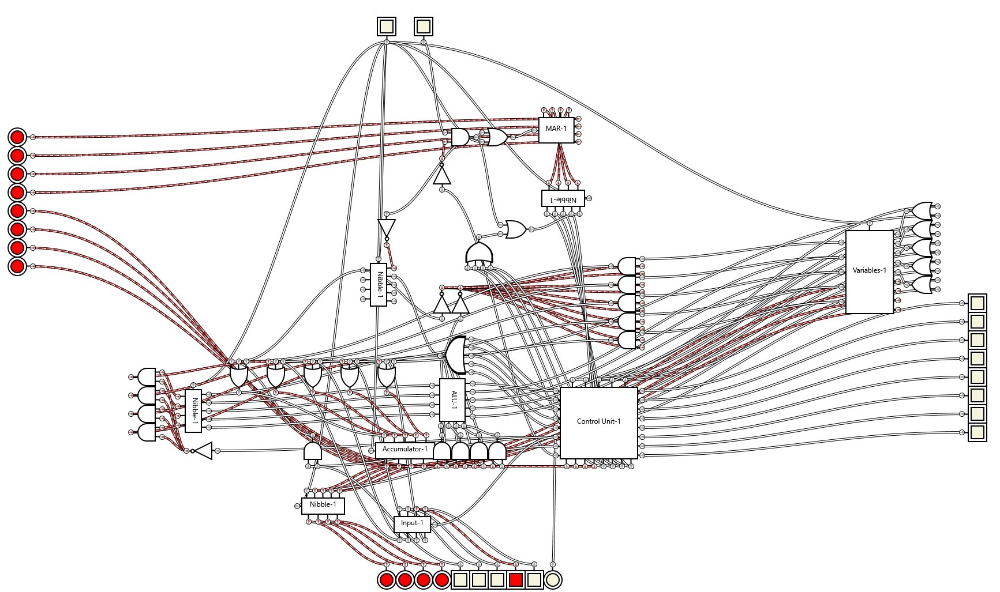
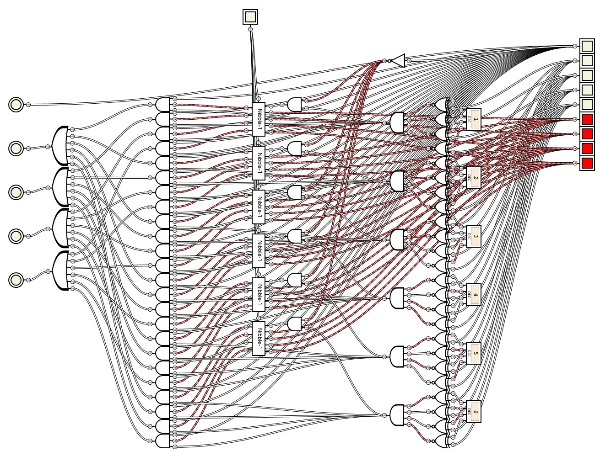
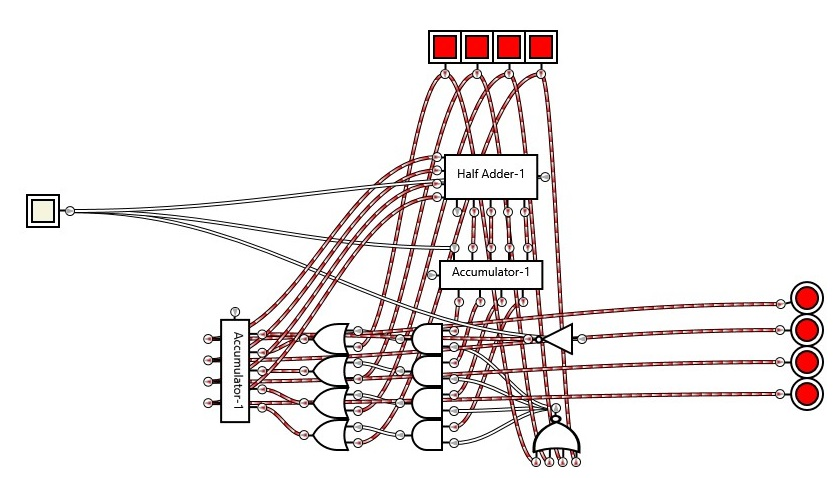

About my von Neumann Computer:
I think it is probably closer to a little man computer (that's what I based this project off) but that isn't an architecture...
Aside from the D flip flop I copied for storing nibbles, I created all the logic circuits for how the ALU, CU and everything else works, and because of
the software I was using to create it, my circuits were quite messy and slow to run... I think the scale of my project was a bit too large!
Because I made the computer ages ago, I can't remeber exactly what everything does, so I'll be lazy and just explain what everything does on a high level, feel free to
decompose the circuits though, I'll link them below :)
Computer
Consists of the cache, an input box, output box and the cpu.
The reset button should be toggled on then off to begin with. Then, iterate through the lines of machine code stored in the cache by slowly toggling the clock button on then off.
If the user input light turns on, input a number into the input box, and press the confirm button to send the value you entered to the accumulator.
When you download the file below, it will have a program in it that doubles an inputted number, each line of code is below:
1100 0000 - Get an input from the user and set the accumulator to that value,
0000 0001 - Store accumulator value in variable 1,
0001 0001 - Load the value from variable 1 into the accumulator (just to show that it can),
1000 0001 - Add value from variable 1 to the accumulator and set the accumulator to that value
0000 0010 - Store accumulator value in variable 2 (for fun I guess, I wrote this code a when I made this... blame a past version of me, not present me!),
1101 0000 - Output accumulator value
1110 0000 - Stops the fetch decode execute cycle - end of code
You can view all the instructions for writing your own code here.
Click the circuit below to download the gatesim file (you can double click on a custom gate to see what it is composed of, so this is the only file I'll link):

Central Processing Unit

Consists of the CU, ALU, MAR, accumulator and variable storer.
What a mess of cables! The command from the cache is sent directly to the CU, where it is decoded and an intruction is sent to execute the command somewhere else in the CPU.
Cache

Consists of the 16 units which output their value if they recieve their address from the MAR.
Wiring those cables was probably the most tedious thing I have ever done! It took hours, and I couldn't get any of it wrong else spend hours figuring out where!
Control Unit

Tasked with decoding the command sent from cache.
Arithmetic Logic Unit

Consists of a full adder and a full subtracter model. I'm not going to explain how the adders and subtracters, as the algorithm's are pretty common - although as I said
I came up with them myself, and then optimised them based off of internet results... I'm not a cheater!
Tasked with adding or subtracting two numbers.
Variable Storage

Another mess, I'm not very good at cable management am I? :D
6 variables can be stored here.
Memory Address Reader

Each time the clock button is turned on then off, the value outputted by the MAR increments by one, making cache output the next command to the CU.
If the CPU is instructed to halt, via the command hlt, the MAR is prevented from incrementing it's value.
<
Contents:
Click to jump to chapter: